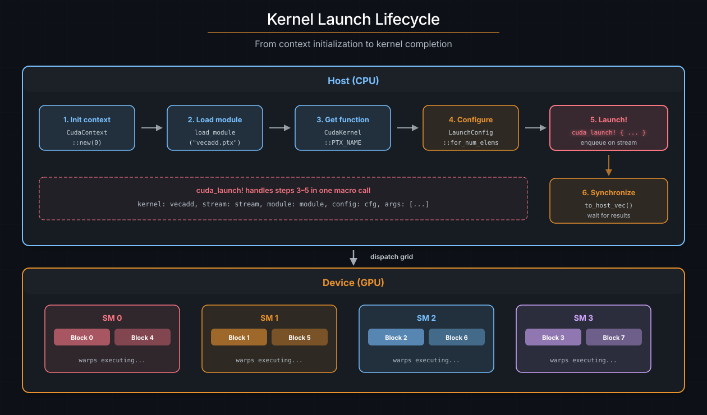

Launching Kernels#
Writing a kernel is only half the story. The host must load device code,
configure the launch grid, marshal arguments, and dispatch the work to the GPU.
The primary cuda-oxide launch path is #[cuda_module]: it embeds the generated
device artifact into the host binary and generates typed launch methods. The
lower-level load_kernel_module and cuda_launch! APIs remain available when
you need explicit sidecar loading or custom launch code; note cuda_launch!
is unsafe and must be wrapped in unsafe { }.
請參閱
CUDA Programming Guide -- Execution Configuration
for the authoritative reference on <<<grid, block, smem, stream>>> semantics.
The launch lifecycle#
Every kernel launch follows the same sequence:
Initialize a CUDA context -- bind to a GPU device.
Load the device module -- usually from the embedded artifact bundle.
Look up the kernel function -- by its PTX entry point name.
Configure the grid -- block dimensions, grid dimensions, shared memory.
Launch -- enqueue the kernel on a stream.
Synchronize -- wait for results (explicit or implicit).
{kind=link}

The kernel launch lifecycle. The host initializes a context, loads the device module, configures the grid, and launches via a typed method. The GPU scheduler dispatches blocks to SMs.#
In practice, #[cuda_module] handles steps 2--5 behind a generated Rust API.
You normally interact with context creation, kernels::load, and a typed method
call.
#[cuda_module] -- typed arguments#
Wrap kernels in an inline #[cuda_module] module to generate a typed loader and
one method per #[kernel]. The generated signature checks kernel arguments,
but a raw LaunchConfig does not prove the kernel's indexing shape or resource
requirements. The raw launch method is therefore unsafe.
raw LaunchConfig -> unsafe launch
PreparedLaunch<K> -> safe launch of exactly K
"Synchronous" here means that you provide a stream and enqueue immediately; GPU execution can still overlap the host until you synchronize.
use cuda_device::{cuda_module, kernel, thread, DisjointSlice};
use cuda_core::{CudaContext, DeviceBuffer, LaunchConfig};
#[cuda_module]
mod kernels {
use super::*;
#[kernel]
pub fn vecadd(a: &[f32], b: &[f32], mut c: DisjointSlice<f32>) {
let idx = thread::index_1d();
let i = idx.get();
if let Some(c_elem) = c.get_mut(idx) {
*c_elem = a[i] + b[i];
}
}
}
fn main() {
let ctx = CudaContext::new(0).unwrap();
let stream = ctx.default_stream();
let module = kernels::load(&ctx).unwrap();
let a = DeviceBuffer::from_host(&stream, &[1.0f32; 1024]).unwrap();
let b = DeviceBuffer::from_host(&stream, &[2.0f32; 1024]).unwrap();
let mut c = DeviceBuffer::<f32>::zeroed(&stream, 1024).unwrap();
// SAFETY: this is a 1D launch and all three buffers contain 1024 elements.
unsafe {
module.vecadd(&stream, LaunchConfig::for_num_elems(1024), &a, &b, &mut c)
}
.expect("Kernel launch failed");
let result = c.to_host_vec(&stream).unwrap();
assert_eq!(result[0], 3.0);
}
Field-by-field breakdown#
Piece |
Description |
|---|---|
|
Generates loader and launch methods |
|
Loads the embedded artifact bundle |
|
Type-checks arguments; raw config requires |
|
Grid/block dimensions and smem |
Argument mapping#
The generated method maps kernel parameters to host values:
Kernel parameter |
Host argument |
GPU ABI |
|---|---|---|
|
|
Pointer + length |
|
|
Pointer + length |
|
|
Pointer + length |
scalar/raw pointer |
Same value |
Value directly |
Return value#
Raw typed launch methods return Result<(), DriverError>. The Ok case means the
kernel was successfully enqueued -- not that it finished. To check for
runtime errors (e.g., out-of-bounds trap), synchronize the stream or context
afterward.
Safe prepared launches#
Declare the kernel's geometry when it is part of correctness:
use cuda_core::LaunchConfig1D;
use cuda_device::{cuda_module, kernel, launch_bounds, launch_contract, thread, DisjointSlice};
#[cuda_module]
mod contracted {
use super::*;
#[kernel]
#[launch_bounds(256)]
#[launch_contract(domain = 1, block = (256, 1, 1))]
pub fn vecadd(a: &[f32], b: &[f32], mut c: DisjointSlice<f32>) {
let idx = thread::index_1d();
if let Some(c_elem) = c.get_mut(idx) {
*c_elem = a[idx.get()] + b[idx.get()];
}
}
}
let module = contracted::load(&ctx)?;
let config = LaunchConfig1D::new(4, 256, 0);
let prepared = module.prepare_vecadd(config)?;
module.vecadd(&stream, &prepared, &a, &b, &mut c)?;
prepare_vecadd checks the exact block shape, device limits, dynamic shared
memory, context, and any cluster/cooperative requirements. LaunchConfig1D
cannot represent active Y/Z dimensions, and PreparedLaunch<vecadd> cannot be
used with another kernel. Preparation may fail; once it succeeds, the branded
launch can be reused safely.
For a contracted kernel, the raw escape hatch is named vecadd_unchecked and
remains unsafe. Uncontracted kernels expose only unsafe raw launch methods.
cuda_launch! -- unsafe lower-level launch#
cuda_launch! is the explicit, unsafe escape hatch below #[cuda_module].
Its niche is modules loaded at runtime by name (a sidecar PTX/cubin/LTOIR
artifact you choose manually), where no compile-time kernel signature exists
to check against.
Because the macro cannot verify the argument list, every use must sit inside
an unsafe { } block. The caller promises that argument count, order, and
types match the kernel's actual signature, and that pointer arguments are
device-accessible. A mismatch is undefined behavior: the driver reads past
the end of the args array, or the device dereferences junk.
use cuda_host::{cuda_launch, load_kernel_module};
let module = load_kernel_module(&ctx, "vecadd").unwrap();
// SAFETY: args match vecadd, buffers are live, and the config is 1D with
// bounds guarded by c.get_mut(idx).
unsafe {
cuda_launch! {
kernel: vecadd,
stream: stream,
module: module,
config: LaunchConfig::for_num_elems(1024),
args: [slice(a), slice(b), slice_mut(c)]
}
}
.expect("Kernel launch failed");
The wrappers in args produce the same host packet as the generated
#[cuda_module] methods: slice(...) and slice_mut(...) push the
(ptr, len) pair, scalar arguments push their value directly, and a
closure or by-value struct pushes as a single byval value (the kernel
boundary receives it as one .param, not as per-field flattened
parameters).
Artifact policy#
#[cuda_module] is a launch-surface feature, not a target-selection feature. It
loads the embedded payload that the compiler placed in the host binary. Decisions
such as PTX versus LTOIR, cubin versus fatbin, or single-arch versus multi-arch
packaging live in the compiler and artifact/runtime loader layers. Keeping that
policy separate lets the generated Rust launch methods stay stable as payload
formats evolve.
PTX and cubin payloads load directly. NVVM IR records its target because pre-Blackwell GPUs use LLVM 7 typed pointers, while Blackwell and newer GPUs use opaque pointers. The loader uses that recorded target when invoking libNVVM.
NVVM IR and LTOIR normally compile for their original target. For a standard
pre-Blackwell target such as sm_86, the loader can instead produce PTX and let
the CUDA driver JIT it on Blackwell. This is not supported for suffixed targets
such as sm_90a, or for running newer-GPU artifacts on older GPUs.
The driver must also support the PTX version produced by the selected toolkit.
CUDA error 222 means the toolkit is too new for the driver's PTX JIT; select a
compatible toolkit or upgrade the driver. The
installation guide
explains why this can differ from the normal LLVM-to-PTX path.
LaunchConfig#
LaunchConfig specifies the grid shape:
use cuda_core::LaunchConfig;
let config = LaunchConfig {
grid_dim: (num_blocks, 1, 1),
block_dim: (256, 1, 1),
shared_mem_bytes: 0,
};
Field |
Type |
Description |
|---|---|---|
|
|
Number of blocks in x, y, z |
|
|
Threads per block in x, y, z |
|
|
Dynamic shared memory per block |
for_num_elems helper#
For 1D data-parallel kernels, the common pattern is one thread per element:
let config = LaunchConfig::for_num_elems(N as u32);
This uses 256 threads per block and computes the grid size via ceiling
division: grid_x = (N + 255) / 256. It is a convenient 1D shape, but it is
still raw data; only preparation ties a configuration to a kernel.
2D and 3D configurations#
For matrix operations, use 2D block and grid dimensions:
let config = LaunchConfig {
grid_dim: ((cols + 15) / 16, (rows + 15) / 16, 1),
block_dim: (16, 16, 1),
shared_mem_bytes: 0,
};
Inside the kernel, combine threadIdx_x() / blockIdx_x() with their _y()
counterparts to compute row and column indices.
Choosing block size#
The block size is the single most important tuning parameter (see the Execution Model chapter for details). Quick guidelines:
256 is a safe default for most kernels.
Powers of 2 (128, 256, 512) align with warp boundaries.
Use
#[launch_bounds]to hint the compiler about your intended block size.
Typed async launch#
With the cuda-host async feature enabled, #[cuda_module] also generates
borrowed and owned async methods. These return lazy DeviceOperation values
instead of enqueuing immediately. No stream is specified at launch time -- the
scheduling policy chooses one when the operation is executed:
use cuda_async::device_context::init_device_contexts;
use cuda_async::device_operation::DeviceOperation;
init_device_contexts(0, 1)?;
let module = kernels::load_async(0)?;
// SAFETY: this is 1D, buffers contain 1024 elements, and module/scheduler share a context.
let op = unsafe {
module.vecadd_async(
LaunchConfig::for_num_elems(1024),
&a_dev,
&b_dev,
&mut c_dev,
)
}?;
// Execute and wait
op.sync()?;
Use the owned form when the operation must be spawned or stored as a 'static
future:
use std::future::IntoFuture;
// SAFETY: this is 1D, owned buffers contain 1024 elements, and contexts match.
let op = unsafe {
module.vecadd_async_owned(
LaunchConfig::for_num_elems(1024),
a_dev,
b_dev,
c_dev,
)
}?;
let (a_dev, b_dev, c_dev) = tokio::spawn(op.into_future()).await??;
Async buffer lifetimes#
Async launches are lazy, so pointer lifetimes matter:
raw pointer shape:
build op from CUdeviceptr
drop buffer
run op later -> stale pointer
borrowed typed shape:
build op from &DeviceBuffer
Rust keeps the buffer borrowed until op completes
owned typed shape:
move DeviceBox into op
spawned task owns the allocation until completion
For a contracted kernel, both async forms accept &PreparedLaunch<K> and are
safe. cuda_launch_async! remains a lower-level unsafe migration API; its
invocation must be inside an unsafe block. Raw pointer async launches are only
correct when the caller can prove that the allocation outlives the lazy
operation.
.sync() vs .await#
Method |
What it does |
|---|---|
|
Execute on the default scheduling policy, block the current thread until complete |
|
Execute and yield the current async task (requires a Tokio runtime) |
Composing GPU work#
DeviceOperation supports functional composition. Chain operations with
and_then and run independent work in parallel with zip!:
use cuda_async::zip;
let forward_pass = layer1_op
.and_then(|output1| layer2_op(output1))
.and_then(|output2| layer3_op(output2));
// Run two independent operations concurrently
let combined = zip!(branch_a, branch_b);
let (result_a, result_b) = combined.sync()?;
Each operation in the chain is scheduled onto a stream only when it executes.
The and_then combinator passes the output of one operation as input to the
next, forming a lazy computation graph.
請參閱
The Async GPU Programming
section covers DeviceOperation, scheduling policies, and stream management in
depth.
Cluster launch#
Thread Block Clusters (Hopper and newer) allow blocks to cooperate beyond shared
memory via distributed shared memory (DSMEM). To launch with clusters, add
#[cluster_launch] to the kernel and include cluster_dim in the launch:
use cuda_device::{kernel, cluster, cluster_launch, DisjointSlice};
#[kernel]
#[cluster_launch(4, 1, 1)]
pub fn cluster_kernel(mut out: DisjointSlice<u32>) {
let rank = cluster::block_rank();
// Blocks 0-3 can communicate via DSMEM
}
On the host, the launch uses launch_kernel_ex (the extended launch API) with
cluster dimensions. cuda_launch! supports this via the cluster_dim field:
// SAFETY: args/config match cluster_kernel, including its 4-block cluster;
// out_dev stays live through synchronization.
unsafe {
cuda_launch! {
kernel: cluster_kernel,
stream: stream,
module: module,
config: config,
cluster_dim: (4, 1, 1),
args: [slice_mut(out_dev)]
}
}
.expect("Cluster launch failed");
小訣竅
Cluster launch requires Hopper (sm_90) or newer. The maximum cluster size is
typically 16 blocks. Use cargo oxide build --arch sm_90 to target Hopper.
Cooperative launch#
Grid-wide barriers (cuda_device::grid::sync() or this_grid().sync()) only
work when every block in the grid is resident on the device at the same time.
A cooperative launch asks the driver to guarantee exactly that; without
it, blocks that have not been scheduled yet can never reach the barrier and
the kernel deadlocks.
On the typed #[cuda_module] path, mark the kernel with
#[cooperative_launch]. Every generated launch method (sync, async, and
owned-async) then submits through cuLaunchKernelEx with the
CU_LAUNCH_ATTRIBUTE_COOPERATIVE attribute set:
use cuda_device::{cooperative_launch, grid, kernel, DisjointSlice};
#[cuda_module]
mod kernels {
use super::*;
#[kernel]
#[cooperative_launch]
pub fn grid_sync_kernel(mut out: DisjointSlice<u32>) {
// ... per-block work ...
grid::sync();
// ... grid-wide post-barrier work ...
}
}
let module = kernels::load(&ctx)?;
// SAFETY: config satisfies the kernel's indexing, residency, and output bounds.
unsafe { module.grid_sync_kernel(&stream, config, &mut out_dev) }?;
Unlike #[cluster_launch], the attribute changes nothing in the PTX; it only
changes how the host submits the launch. The two attributes may be combined
on one kernel, in which case both launch attributes go into the same
cuLaunchKernelEx call.
The legacy (caller-unsafe) cuda_launch! macro offers the same behaviour
through its cooperative: true field.
小訣竅
The whole grid must fit on the device in a single wave, or the driver rejects
the launch with CUDA_ERROR_COOPERATIVE_LAUNCH_TOO_LARGE. Size the grid from
cuOccupancyMaxActiveBlocksPerMultiprocessor (blocks per SM × SM count) when
in doubt.
Common launch errors#
Error |
Likely cause |
Fix |
|---|---|---|
|
Grid or block dimensions are zero or exceed limits |
Check |
|
PTX entry point name doesn't match |
Verify |
|
Too much shared memory or too many registers per block |
Reduce |
|
Kernel hit a trap (panic, assert failure, OOB) |
Debug with |
|
PTX compiled for wrong architecture |
Rebuild with |
|
Driver cannot compile the PTX version in the module |
Select a compatible |
請參閱
The Error Handling and Debugging chapter covers how to diagnose and fix kernel failures in detail.